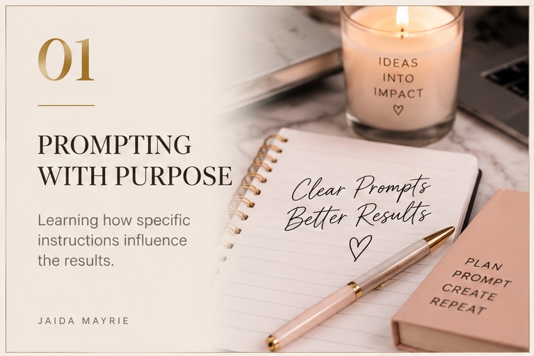

Learning how specific instructions influence the results.
FROM PROMPT TO PRODUCTION · DAY THREE
Day Three was about moving beyond experimenting with AI and learning how to communicate a creative vision. I explored how prompts, visual references, movement instructions, and revisions shape the final video.